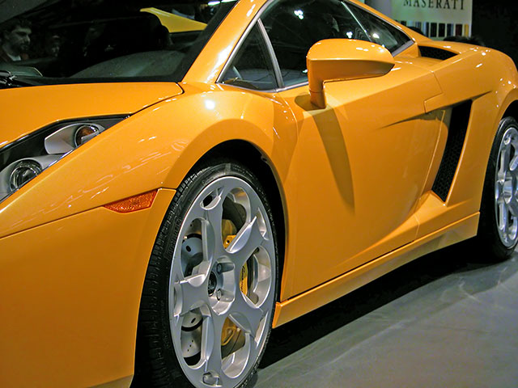
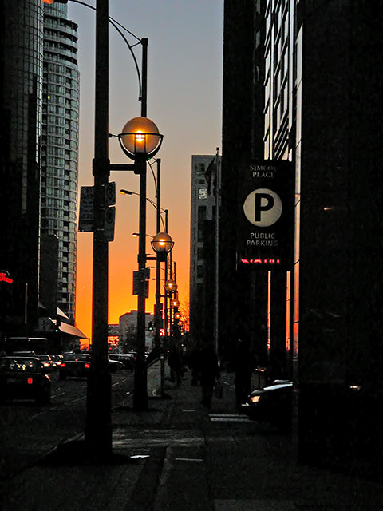

I had a fun time at the Canadian Auto show yesterday. Part of the fun was seeing the cars, but a large part of the fun was getting an opportunity to shoot some photos. Here's one that I rather like:

This image was shot at ISO 200 on my trusty Nikon 5700. After spending a day with the camera, I had an opportunity to reflect on my eventual upgrade to a DSLR. Pros: much better low-light performance from a) lower noise in the sensor and b) better auto-focus in low light. Cons: having to look through the viewfinder for most shots - I'm very happy with video-camera style shooting using the twisting LCD monitor on my 5700.
I can still compensate for most of the cons with technique. To solve the poor low-light focus problems, I use the AF-lock button to focus on another subject that is at the same distance as the subject that I want to shoot, and recompose. For the noise problem, I use Neat Image to scrub noise out of my photos.
I also upgraded last night to Photoshop CS as well. The killer feature in this version of Photoshop is Shadows and Highlights. Through a very simple UI, you can bring detail out of the shadows of your photographs- effectively increasing the dynamic range of your images. This is similar to the bracketed exposures technique that I discussed earlier, but with the advantage of only requiring a single image. I've mostly avoided shooting RAW using my 5700. But with Photoshop CS, I can now manipulate the 12-bit per channel files directly in 16-bit mode. Combined with Shadows and Highlights, I'm really excited about some of the images that I'll be able to create.
Here's a sample of shadows and highlights in action. The first image is a shot straight out of the camera. The second image is a shot that was processed using Shadows and Highlights. There is a dramatic difference between these two images in spite of the fact that 1) I shot the image at ISO 400 and 2) I didn't use RAW mode - this is a JPEG from the camera, so I've lost 4 bits per channel of information.


very nice. i didn't know about the shadow tool in CS. i need to upgrade but i think i'll wait till i figure out my computer situation. btw, looks like i'm going to be getting a 1d mkII...
Posted by: sean at February 17, 2004 10:57 AMMy current desktop computer makes CS absolutely fly. You should get something with comparable specs - a new 3GHz P4 PC should run about $1K USD.
A 1D MkII, huh? I am sooo jealous. It looks like an awesome camera. I'm looking forward to seeing the shots that come out of it!
Posted by: John Lam at February 17, 2004 06:54 PMGreat pictures...and cool effect on Photoshop CS